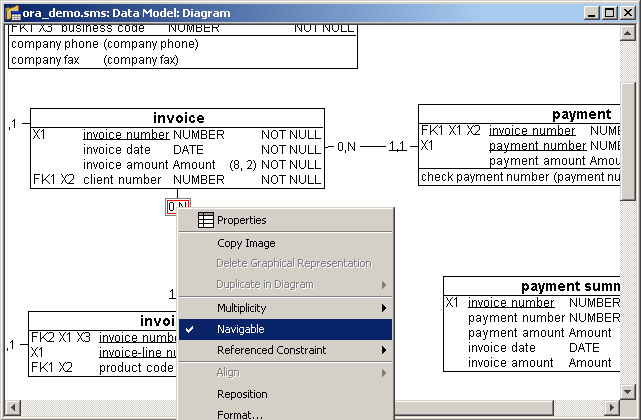

Managing foreign keys

Foreign keys are used to establish and maintain relational links in the
database. They are automatically generated, based on the associations
and their connectivity.
The foreign keys represent the relationship between tables. Each child table contains
a copy of its parent table’s primary key. This copy is called foreign key.
Foreign keys are managed
off-line, which means that
the user has the responsibility
of maintaining the referential
integrity of the data model.
Generating foreign keys
First, the data model you have created has to be highlighted in the explorer window,
then perform the following steps:
- Select Tools > Foreign keys > Generate foreign keys. The generate foreign
keys window will appear.
- Choose the needed options (for information on the options, see next page).

- Confirm with the Generate Foreign Keys button to perform the operation.
A report will appear at the end of the operation.
Modifications to NULL/NOT NULL possible will be applied automatically
if they were needed to validate the model according to multiplicity. However,
it will not be reported.
Select the Report button if
you want to see the report
before the generation. Remember,
it will not procede to
the foreign key generation.
NOTE: For Informix data models ONLY, the foreign columns refering to primary or unique
key columns of type SERIAL or SERIAL8 will be set as INTEGER or INT8.
Generate foreign keys: options
Several options are offered during the generation process to control the actions applied
to the existing foreign key columns.
Orphan columns:
A column is said to be an orphan when it is indicated as being foreign and the
referenced primary or unique key column is not present in the model.
Delete orphan columns
Orphan foreign columns will be deleted when generating foreign keys.
Keep orphan columns as they are
Orphan foreign columns will be kept when generating foreign keys.
Set orphan columns as basic columns
Orphan foreign columns’ “foreign indicators” will be set to false when generating
foreign keys.
Updating descriptors
It is quite common to have foreign column properties differ from referenced primary
or unique key columns. The list of options of descriptors update offers the possibility
to propagate primary or unique key columns information to their corresponding foreign
columns.
Here are the five different descriptors:
- Name
- Physical name
- Alias
- Type, length, Nbr. decimals
- Common item
After the foreign key generation, your model should look similar to the following:

Example of a foreign key generation report:

Delete foreign keys
This feature deletes foreign key constraints and columns for the whole data model.
Propagate to foreign key columns
Propagate primary or unique key columns' attributes to corresponding
foreign key columns for the entire data model or a selection of columns (available on the column concept).
Impact of association role properties
Some of the properties of the association role have an impact on the foreign key
management.
Navigability
It is applicable to the child end of the association. The association role has to be
navigable for a foreign key to be generated. Apply on links between objects by selecting
its value indicator (red square here).

Constraint types
- Foreign key: the referential integrity represented by the association role will
be implemented by foreign key constraint and the corresponding columns
will be generated according to the referenced constraint selection.
- Trigger: the referential integrity represented by the association role will be
implemented by a database trigger. No foreign key constraint or column will
be generated for this role.
- Application: the referential integrity represented by the association role will
be implemented in application code. No foreign key constraint or column will
be generated.
- Unspecified: will have the same behavior as the foreign key option.
Referenced constraint
It is applicable only on primary or unique keys. The referenced constraint identifies a
specific primary or unique key. If however, it returns an unspecified result, by default,
the application will assume a reference to the primary key.